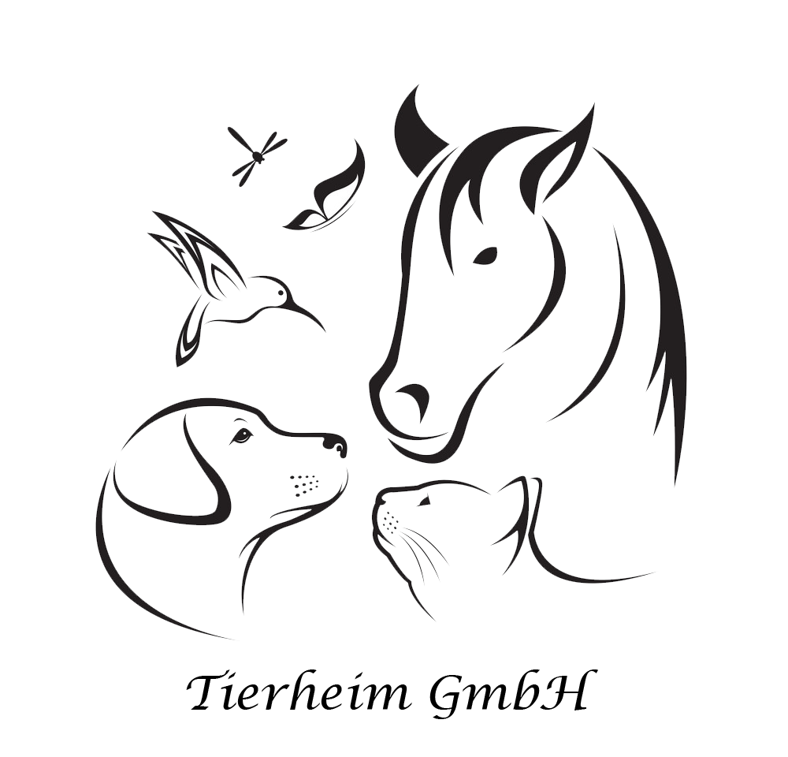
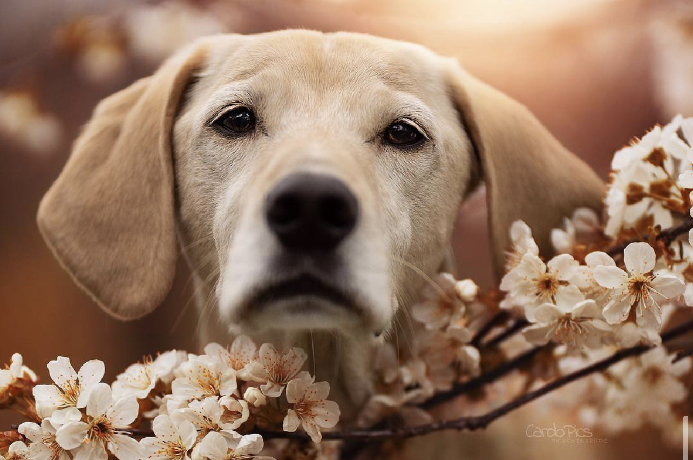
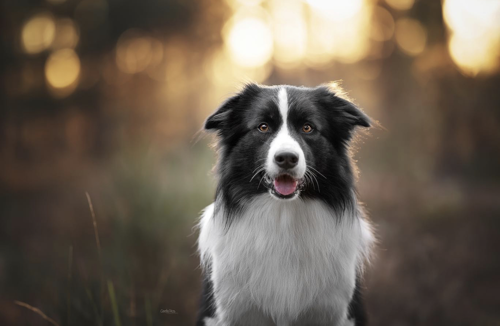
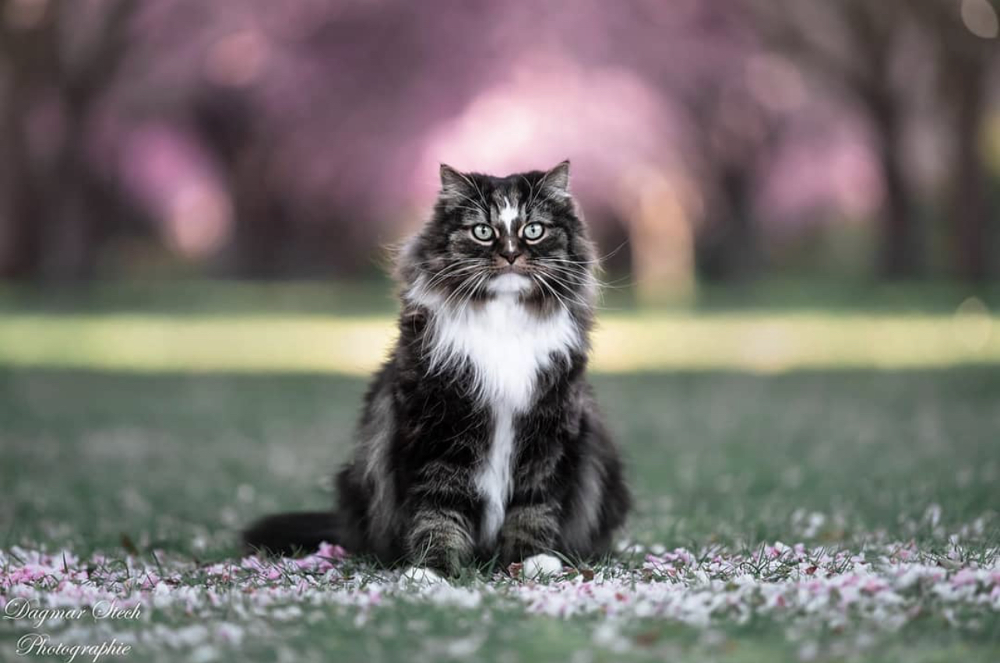
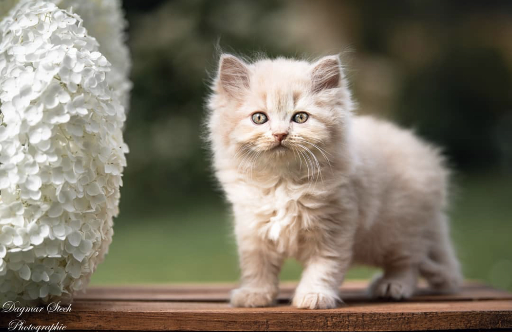
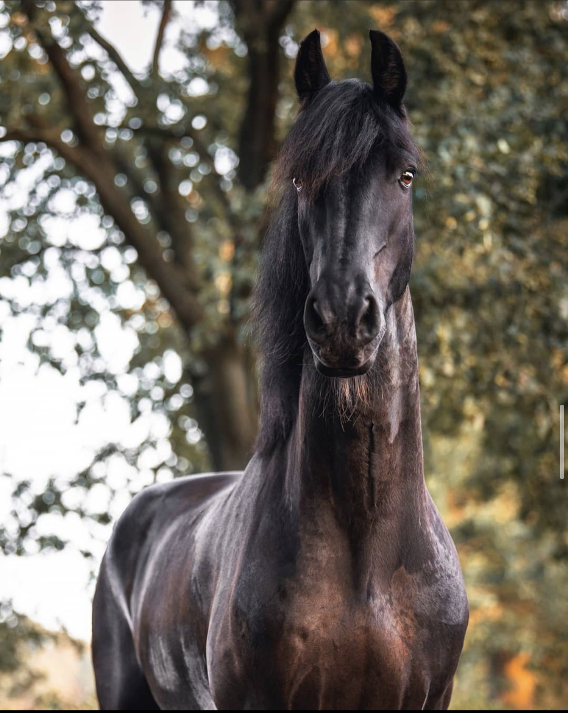
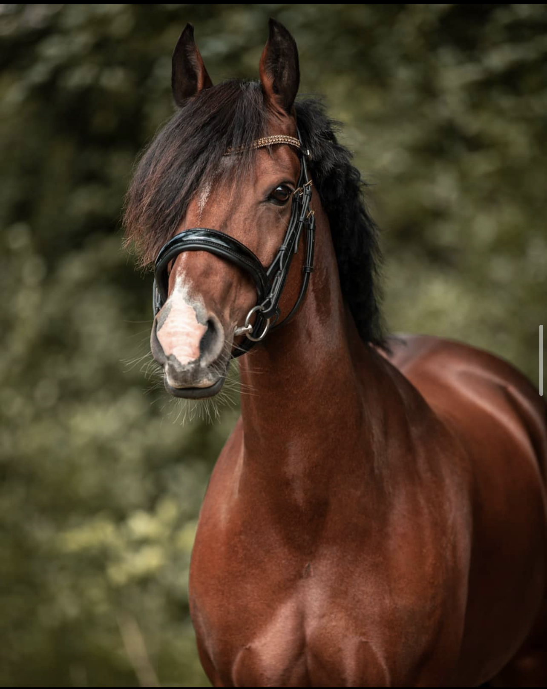
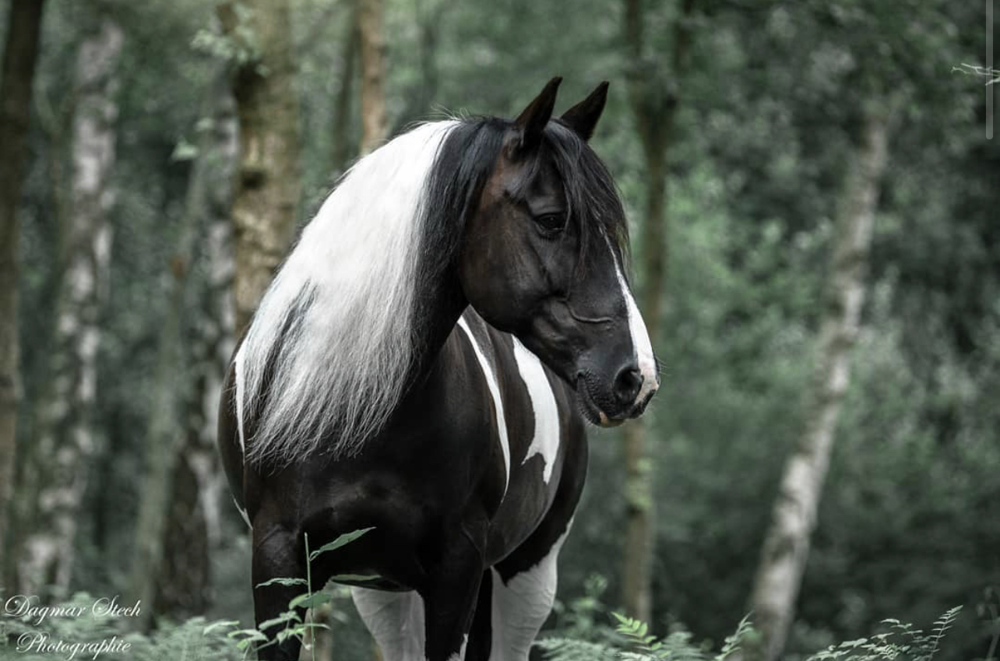

Das sind wir
Willkommen bei Tierheim GmbH
Wir sind der festen Überzeugung, dass Tiere das Leben bereichern. Diese Einstellung hat uns im Laufe der Zeit in all unseren Unternehmen begleitet. Seit 1955 setzen wir uns für den Tierschutz in unserer Region ein und helfen Tieren, ein schönes neues Zuhause zu finden. Bitte unterstützen Sie uns auch weiterhin bei unserer Arbeit! Unsere Bewohner danken es Ihnen!
| Hunde | ||
|---|---|---|
|  |
Name: Amy Geschlecht: weiblich Rasse: Labrador Herkunft: Neufundland Alter: 3 Jahre Eigenschaften: Ausgeglichen, Intelligent, Nett, Agil, Kontaktfreudig, Zutraulich, Sanftmütig |
Im Tierheim sitzt Amy schon seit 2 Jahren, nachdem sie auf der Straße gefunden wurde, damit hat sie ihre Jugend in einem Zwinger verpasst. Nichts desto trotz ist Amy eine sehr aufgeschlossene Hündin, sie liebt ball spiele, wird gerne auf Spaziergänge mit genommen und bemüht sich auch ihre Geschäfte nach möglichkeit außerhalb des Zwingers zu machen, wir würde naher auf jeden fall sagen, das Amy sehr gerne stubenrein sein würde und sich schnell in einem neuen Zuhause einfinden kann. |
|  |
Name: Mia Geschlecht: weiblich Rasse: Border Collie Herkunft: Vereinigtes Königreich, Schottland, Irland, Wales, England Alter: 6 Jahre Eigenschaften: Beharrlich, Energisch, Intelligent, Scharfsinnig, Ansprechbar, Konzentriert |
Mia lebte allein auf einem Grundstück und es kümmerte sich kaum jemand um ihr. So beschloss Mia auszubrechen und sie streunte mit zwei anderen Hunde durch die Straßen von Malaga. Einer der Hunde verschwand spurlos, die Hündin wurde von einem Tierschutzverein übernommen und Mia wurde von einer Familie mitgenommen, die ihr ein Zuhause suchen wollte. Doch die dort lebende Katze hasste Mia und der Mann war ihr gegenüber aggressiv. Trotzdem war Mia freundlich zu allen Familienmitgliedern, sie zeigte auch große Empathie gegenüber einem Familienangehörigen, der im Rollstul saß. Sie liebte es, in den Hundepark zu gehen und dort zu spielen und eine gute Zeit mit den anderen Hunden zu haben, aber die Familie konnte und wollte Mia nicht behalten. So wurde Mia von einem Mann adoptiert, der sie auf einem großen Landgrundstück alleine ließ und wieder fühlte sich Mia einsam und sie lief weg, weil sie Kontakt suchte. Doch es sollte noch schlimmer werden, denn Mia landete bei einer Dame, die unter dem Vorwand, Familien für die Hunde zu suchen, animal hording betrieb. Diese Menschen verlieren jeden Bezug zur Realität und sind mit den Tieren völlig überfordert und vernachlässigen sie. So erging es auch der armen Mia, sie war eingesperrt und litt entsetzlich unter den schlechten Bedingungen. Zum Glück wurden Tierschützer auf die Dame aufmerksam und die Hunde wurden auf die umliegenden Tierheim verteilt. Dort war man entsetzt, denn die Hunde waren in einem schrecklichen Zustand, sie brachten Unmengen Flöhe und Zecken mit. Zu allem Unglück wurde bei Mia auch noch Leishmaniose festgestellt. Sie wird behandelt und wir alle hoffen, dass die Behandlung anschlägt. Mia st ein Goldstück, sie braucht zwar noch etwas Erziehung, aber sie ist sehr menschenbezogen und verspielt. Sie genießt das Leben und freut sich rieisig, wenn die Freiwilligen seinen Zwinger betreten. Dabei übertreibt sie es auch manchmal und springt hoch, um seiner Freude Ausdruck zu verleihen, aber sie hört sofort damit auf, wenn man ihr den Befehl dazu gibt. Sie legt sich auch gerne auf den Rücken und lässt sich den Bauch kraulen. Endlich erhält sie die Zuwendung, die sie so lange vermisst hat und weswegen sie mehrmals weggelaufen ist. Mia spielt gerne Ball und kommt gut mit anderen Hunden zurecht. Für Mia suchen wir eine aktive Familie, gerne mit etwas größeren Kindern, die sie beschäftigt und die sie mit liebevoller Konsequenz erzieht. Der Besuch einer Hundeschule wäre sicherlich ratsam. |

|
Name: Luna Geschlecht: weiblich Rasse: Norfolk Terrier Herkunft: Großbritannien Alter: 4 Jahre Eigenschaften: Selbstvertrauen, Furchtlos, Glücklich, Feurig, Kameradschaftlich, Liebenswürdig |
Die am 17.01.2017 geborene und kastrierte Luna wurde am 01.05.18 als Fundhund bei uns abgegeben. Dank einer Facebook-Suche nach seinen Besitzern konnten diese aber ausfindig gemacht werden und gaben zu, Luna fälschlicherweise als Fundhund abgegeben zu haben. Luna war zwei Monate zuvor direkt aus Rumänien in die Familie gekommen, verstand sich aber nicht mit den beiden dort lebenden Hunden. Katzen mag Luna auch keine. Luna ist zu Hause stubenrein, kann einige Stunden alleine bleiben und fährt auch problemlos im Auto mit. Da Luna anfangs furchtlos und selbstsicher ist, sollten Kinder im neuen Zuhause schon mindestens 16 Jahre alt sein. Wenn man ihn zu sehr bedrängt, kann sie schnappen. Wenn er einen kennt ist sie ein lustiger Begleiter. Luna braucht Menschen, die mit ihr verantwortungsbewusst umgehen, mit ihr üben und ihr nicht ableinen. Luna ist an der Leine brav solange derjenige am anderen Ende der Leine weiß was er tut. |
| Katze | ||
|  |
Name: Felix Geschlecht: männlich Rasse: Norwegische Waldkatze Herkunft: Norwegen Alter: 10 Jahre Eigenschaften: freundlich, temperamentvoll, neugierig, verspielt, intelligent |
Felix wurde in einem schlechten Zustand und verletzt auf der Straße gefunden. Wahrscheinlich kamen die Verletzungen daher, dass er Schutz im Motorraum eines Autos gesucht hatte. Er hat jetztnoch paar kleine Verletzungen am Hals, aber das bereitet ihn keinerlei Probleme und er ist trotzdem ein kleiner Schönheit. Anfangs war Felix etwas schüchtern, aber inzwischen ist er richtig zutraulich geworden und freut sich riesig, wenn jemand ein wenig Zeit für ihn hat. Der hübsche Felix wartet immer noch darauf, dass sich endlich jemand in ihn verliebt. Er ist so ein lieber Kater. Mit ihren Artgenossen kommt er ebenfalls gut zurecht. Da muss es doch irgendwo eine liebe Familie für ihn geben? |
|  |
Name: Simba Geschlecht: männlich Rasse: Perser Herkunft: Iran Alter: 6 Monate Eigenschaften: intelligent, verspielt, anhänglich, ruhig, freundlich |
Mein Name ist Simba und ich bin im Februar 6 Monate alt geworden. Als ganz kleines Kätzchen kam ich zusammen mit meinen beiden Schwestern in einem Garten gefunden – ohne unsere Mama und so kamen wir drei zu unserer Pflegemama. Meine Schwestern haben schon lange ein Zuhause gefunden, nur ich nicht. Dabei möchte ich doch auch ein Zuhause haben! Warum mich niemand anruft, verstehe ich gar nicht. Dabei bin ich eine ganz tolle Katze – natürlich kastriert, geimpft und gechipt. Ich schmuse gerne – mit Menschen, aber auch mit anderen Katzen. Meine Pflegemama sagt immer, ich hätte so ein weiches Fell, da möchte man die Finger gar nicht mehr rauslassen. Aber ich schau mir die Menschen immer erst ganz genau an, bevor sie mich anfassen dürfen. Schließlich weiß man ja nie, wer einem da über den Weg läuft. Spielen ist auch toll – gerne auch mit der Spielangel) und ich liebe Stinkekissen. Hier auf der Tierheim haben wir gesicherten Freigang. Das heißt, wir können den Garten nicht verlassen. Der ist so eingerichtet, dass er „dicht“ ist. Das möchte ich auch gerne wieder haben. Aber ich kann natürlich auch richtigen Freigang lernen. Das ist bestimmt auch toll. Aber nur in der Wohnung herumsitzen und die Wände anstarren möchte ich nicht. Und ich hätte gerne einen Katzenkumpel (ob männlich oder weiblich ist mir egal, nur nett sollte er sein), mit dem ich kuscheln und spielen kann. |

|
Name: Sammy Geschlecht: männlich Rasse: Britisch Kurzhaar Herkunft: Großbritannien Alter: 8 Jahre Eigenschaften: ruhig, intelligent, unaufdringlich, freundlich |
Sammy wurde, zusammen mit anderen Katzen, auf der Straße eingefangen und kam so in die Perrera, die spanische Tötungsstation. Sie ist noch sehr ängstlich und misstrauisch den Menschen gegenüber. In einem neuen Zuhause sollten auf jeden Fall schon Katzen vorhanden sein, die gut sozialisiert sind und an denen sie sich orientieren kann. Sie hofft, trotz ihrer Schüchternheit, dass sie die Chance bekommt, endlich ein richtiges Zuhause kennenzulernen, wo die Menschen etwas Geduld mit ihr haben. |
| Hamster | ||

|
Name: Chipsy Geschlecht: weiblich Rasse: Campbell-Zwerghamster Herkunft: Mongolei, Nordchina, Südsibirien Alter: 11 Monate alt Eigenschaften: quirlig, aktiv |
Die kleine Chipsy wurde vor ein paar Monaten von uns vermittelt und ist nun wieder bei uns, da man sich die Hamsterhaltung anders vorgestellt hat. Sie ist toll. Sie ist im April 2020 bei uns in der Hamsterhilfe zur Welt gekommen. Ihre Mutter kam bereits trächtig bei uns an. |

|
Name: Teddy Geschlecht: männlich Rasse: Teddy-Goldhamster Herkunft: Syrien, Türkei Alter: 1,5 Jahre alt Eigenschaften: schnell zahm |
Teddy stammt aus einem Überraschungswurf. Die Mutter wurde unwissentlich trächtig gekauft und Ende Dezember lag dann eine Überraschung im Nest. Ihre anderen Geschwister sind bereits vermittelt. Nun sucht auch Teddy ganz bald nach einem neuen Zuhause. Da er erst seit kurzem in den Tierheim ist, sind weder seine Aufstehzeigen, noch sein Charakter beurteilbar. Bisher scheint er jedoch ein freundlicher Hamster zu sein. Da er sehr aktiv ist benötigt Teddy ein großes Gehege mit viel Auslauf. |

|
Name: Micky Geschlecht: männlich Rasse: Goldhamster Herkunft: Syrien, Türkei Alter: 5 Monate alt Eigenschaften: manchmal launisch, meist friedlich, ruhig |
Micky kam mit einer sehr traurigen Vorgeschichte zu uns und sucht nun das Zuhause, das er schon lange verdient hätte. Er ist ein neugieriger Junge, hat aber verständlicherweise noch vor vielem Angst. Eine nähere Beschreibung folgt, wenn er sich etwas einleben konnte. |
| Pferde | ||
|  |
Name: Heaven Geschlecht: männlich Rasse: Friese Herkunft: Niederlande Alter: 8 Jahre alt Eigenschaften: freundlich, intelligent, zuverlässig, geduldig |
Heaven ist ein lieber, großer, verspielter Pferd. Er liebt geistige Beschäftigung und ist sehr clever. Er ist freundlich im Umgang, jedoch ranghoch. In der Herde bevorzugt er den Umgang mit Stuten, und sollte wenn überhaupt besser nur mit rangniedrigen Wallachen zusammen stehen. Er ist 1,77 m groß und kennt auch den Umgang mit kleinen Kindern. Auch hier ist er freundlich und vorsichtig mit den kleinen, aber natürlich kein Kinderpony. Er lebt seit 8 Jahren im Tierheim und kennt 24/7 Heufütterung. Aufgrund seiner vergangenen Hufrehe darf er nur sehr bedacht auf die Weide. |
|  |
Name: Ginger Geschlecht: männlich Rasse: Friese Herkunft: Niederlande Alter: 8 Jahre alt Eigenschaften: freundlich, intelligent, zuverlässig, geduldig |
Hallo, mein Name ist Ginger und ich bin ein 8 Jahre alt und 165 cm groß. Ich stand die letzten Jahre in einem Ausbildungsstall wo ich sehr gut gepflegt und gehegt wurde, was man mir auch ansieht. Ich habe eigentlich eine Karriere als Reitpferd angestrebt, doch leider machten mir ein Befund im CTÜ und eine Strahlbeinveränderung einen Strich durch die Rechnung. Da ich nicht mehr geritten werden kann, haben meine Besitzer entschieden, dass ich mein Leben jetzt auf einer schönen Weide mit vielen Kumpels verbringen darf.Ich wünsche mir einen schönen Stall mit Gruppenhaltung und Ganzjahresweide. Da ich vorne leider einen Bockhuf habe, brauche ich regelmäßig Besuch vom Hufschmied und regelmäßige Strahlpflege. Auch brauche ich eine konsequente, immer faire Hand und einen zuverlässigen Menschen mit Pferdeverstand an meiner Seite. Meine Besitzer können sich unterschiedliche Modelle für mich vorstellen (Zurverfügungstellung als Beisteller, Abgabe mit Schutzvertrag ….). Das müssten wir alles im persönlichen Gespräch klären. |
|  |
Name: Black Beauty Geschlecht: männlich Rasse: Friese Herkunft: Niederlande Alter: 15 Jahre alt Eigenschaften: freundlich, intelligent, zuverlässig, geduldig |
Black Beauty ist eine sehr menschenbezogene, manchmal etwas hitzige Stute, die aber im Umgang von Anfängern zu Händeln ist und von erfahrenen Reitern sowohl in der Halle, als auch auf Außenplätzen reitbar ist. An der Longe ist sie außerdem das ideale Lehrpferd, vor allem Kinder liebt sie. Sie wurde letztes Jahr aus dem Training genommen, aber kommt sicherlich mit Kontinuität wieder in Form. Am liebsten geht sie ins Gelände, dort ist sie manchmal etwas übermütig, aber händelbar, geht seit der zunehmenden Erblindung aber nur noch in der Gruppe ins Gelände, mit ein wenig Übung kann das aber wieder erarbeitet werden, da sie sehr trittsicher ist. Wir suchen Ihren Menschen, der gewillt ist, viel Abwechslung in die Arbeit mit ihr einzubringen, sie will gefallen und geht für ihren Menschen durch’s Feuer - an der reinen Dressurarbeit hat sie wenig Spaß, einen einfühlsamen Reiter wird sie aber auch hier nicht enttäuschen. Auch Distanzritte sind durchaus möglich. Sie ist im Gelände enorm lauffreudig und zufrieden, allerdings durch die Erblindung entsprechend schreckhafter. Sie hat Asthma, das schränkt sie im Alltag aber nicht ein, im Training braucht sie eine etwas längere Aufwärmphase und es ist hilfreich, sie vor der Bewegung inhalieren zu lassen - das macht sie problemlos und den Inhalator darf sie mit ins neue Zuhause nehmen. |
| Kaninchen | ||

|
Name: Rambo Geschlecht: männlich Rasse: Rexkaninchen Herkunft: Frankreich Alter: 5 Jahre alt Eigenschaften: saftmütig, freundlich |
Der liebe Rambo kam als Fundtier in unseren Tierheim. Nun suchen wir ein liebevolles Zuhause für den Kleinen. Wie er in seinem vorherigen Zuhause gelebt hat, wissen wir leider nicht, doch während der wärmeren Monate ist es sicher möglich, ihn an die reine Außenhaltung zu gewöhnen. Generell braucht Rambo viel Platz, um herumzutoben und hakenzuschlagen, und täglichen Freilauf. Wie alle Kaninchen vermitteln wir auch Rambo nur zu oder mit einem passenden Kaninchenkumpel. |

|
Name: Snow Geschlecht: weiblich Rasse: Lohkaninchen Herkunft: England Alter: 5 Jahre alt Eigenschaften: freundlich, voller Energie |
Snow kam Anfang Dezember 2016 mit ihren zwei Geschwistern Fite und Laura in unsere Obhut, weil ihr vorheriger Halter sich nicht mehr gut um sie kümmern konnte. Nun sucht sie nach seinem Hoppelparadies für immer. Die Kaninchendame zeigt sich bei uns noch zurückhaltend und traut sich noch nicht so richtig aus ihrem Pelz heraus. Mit ein wenig Geduld, Liebe und Futter wird sich das mit Sicherheit auch ändern. Snow möchte ihr Leben natürlich nicht alleine verbringen, weshalb wir sie nur zu bereits vorhandenen Artgenoss*innen oder mit unseren Kaninchen vermitteln. Sie könnte auch mit ihren Geschwistern vermittelt werden, da sie aber aktuell nicht zusammensitzen, müsste man sie im zukünftigen Zuhause neu vergesellschaften. Unsere Kaninchendame lebt bei uns in der Außenhaltung und sollte daher auch in diese vermittelt werden, weil ihr der Wind im Fell mit Sicherheit fehlen würde. |

|
Name: Cookie Geschlecht: männlich Rasse: Lohkaninchen Herkunft: England Alter: 6 Jahre alt Eigenschaften: freundlich, voller Energie |
Dieser coole Kerl mit dem schwarzen Fleck auf der Nase heißt Cookie. Seine Mutter – ein Hauskaninchen – wurde ausgesetzt und von einem wilden Kaninchenbock schwanger. Ihre Kinder bekam die Mutter bei uns im Tierheim – nun suchen wir ein fürsorgliches Zuhause für Cookie. Cookie ist uns gegenüber äußerst zurückhaltend. Wie alle Kaninchen vermitteln wir auch sie nur zusammen oder zu Artgenoss*innen. Viel Platz zum Rumhoppeln sowie täglicher Freilauf ist ein Muss für Cookie. Während der wärmeren Monate ist es sicher möglich, Cookie an die reine Außenhaltung zu gewöhnen. |
| Vögel | ||

|
Name: Tweety und Susi Geschlecht: männlich und weiblich Rasse: Plattschweifsittiche Herkunft: savannenartigem Wald- und Buschland und in Galeriewäldern Alter: 12 Jahre alt Eigenschaften: nicht ganz klar |
Tweety und Susi kamen getrennt voneinander bei uns im Tierheim an. Damit beide einen Partner haben und nicht so allein sind, wurden sie vergesellschaftet und schnell zeigte sich: Die beiden haben sich gesucht und gefunden. Gerne möchten wir sie daher gemeinsam in ein neues Zuhause vermitteln. Ihre Voliere sollte ausreichend groß sein und der tägliche Freiflug darf nicht fehlen. Die beiden können gerne auch in eine größere Wellensittichgruppe vermittelt werden und sind sowohl für Innenhaltung, bei stabilen warmen Temperaturen auch für die Außenhaltung geeignet. |

|
Name: Kiwi Geschlecht: weiblich Rasse: Papagei Herkunft: nicht ganz klar Alter: 9 Jahre alt Eigenschaften: nicht ganz klar |
Kiwi wurde gefunden und sucht ein Zuhause mit Erfahrung bei der Papageienhaltung und idealerweise auch -vergesellschaftung. Sie wünscht sich ein nettes Goldbugpapageien-Männchen; zu einer anderen Art sollte sie nicht ziehen, da dies kein passender Partner für sie wäre. Leider scheint Kiwi auf den Menschen fehlgeprägt zu sein – hier sind der Sachverstand und die Erfahrung ihrer neuen Besitzer gefragt. Sie ist ein sehr neugieriger Vogel, der sehr gern alles anknabbert, und braucht deshalb viel Beschäftigung. Clickertraining wäre sicherlich großartig für sie. Kiwi sucht sich ihre Menschen gern selbst aus und zeigt das auch ziemlich klar, indem sie zubeißt, wenn ihr jemand nicht passt. Deshalb wäre es gut, wenn die Möglichkeit bestünde, sie ohne direkten Menschenkontakt zu halten. |

|
Name: Rikky Geschlecht: weiblich Rasse: Wellensittich Herkunft: Australien Alter: 4 Jahre alt Eigenschaften: verspielt, fröhlich, friedlich und genügsam |
Der hübsche Wellensittich ist nett und freundlich aber noch nicht handzahm. Für eine artgerechten Haltung sollte sie bald ein netter Partner finden oder bei einem schon vorhandenen Schwarm einziehen. Ihre Voliere sollte ausreichend groß sein und der tägliche Freiflug darf nicht fehlen. Momentan ist Rikki nur für Innenhaltung geeignet. Ab nächstem Frühjahr, bei stabilen warmen Temperaturen, könnte sie auch an die Außenhaltung gewöhnt werden. |
| Gebühren | ||
|
Hunde
bis 6 Monate
480 Euro bis 12 Monate 400 Euro bis 8 Jahre 300 Euro ab 8 Jahren 150 Euro Pärchen nach Absprache |
Katze 120 bis 200 Euro Pärchen 200 bis 300 Euro |
Hamster 10 Euro Pärchen 15 Euro Trio oder mehr 7,50 Euro/pro Nase |
|
Pferde
Ab 1500 Euro Pärchen Ab 2750 Euro |
Kaninchen 45 Euro Pärchen 70 Euro |
Vögel Wellensittich 20 Euro Pärchen 30 Euro Papagei ab 290 Euro Pärchen ab 500 Euro |
| Kontakt | ||
|
Tierheim GmbH
Manhattan Str. 56 | 40489 Düsseldorf Tel.:0211 - 123456 | Fax: 0211 - 78 94 58 Mail: info@tierheimgmbh.de |
||